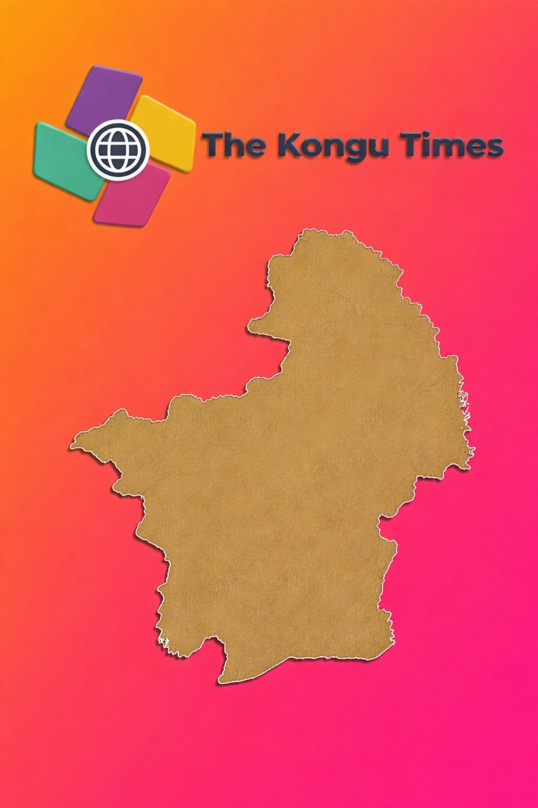

இன்றைய தலைச்செய்தி · April 13, 2026

கொங்கு மண்டல வரைபடம் — Kongu Nadu, Tamil Nadu
தேர்தல் 2026: கொங்கு மண்டலத்தில் DMK, AIADMK, TVK — மும்முனைப் போட்டி முற்றியது
தமிழ்நாடு சட்டமன்றத் தேர்தல் ஏப்ரல் 23, 2026 அன்று நடைபெறுகிறது. கொங்கு மண்டலத்தில் உள்ள 7 மாவட்டங்களில் மொத்தம் 38 தொகுதிகளில் DMK, AIADMK மற்றும் TVK மும்முனைப் போட்டி நடைபெறுகிறது. 2021ல் AIADMK 26 தொகுதிகள் வென்ற இந்த மண்டலத்தில் இம்முறை DMK ஆதிக்கம் செய்யுமா என்பது கேள்வியாக உள்ளது.
Lok Poll survey (April 2026, sample: 1.17 lakh voters) predicts DMK winning 44–46 seats across the Kongu zone. TVK's entry as a third force adds fresh unpredictability to what was once a two-party contest.
📅 April 13, 2026🗳 Elections 2026✍️ The Kongu Times
Transport · All Kongu
Bengaluru–Ernakulam Vande Bharat approved — stops at Salem, Erode, Tiruppur, Coimbatore
Railway Ministry greenlights a new Vande Bharat Express connecting Bengaluru and Ernakulam via all major Kongu cities — a major boost for trade, travel and industrial connectivity across the region.
📅 April 10, 2026 · 🏷 Railway
Roads · Erode & Salem
NH 544 to become 6-lane highway — Erode Bhavani flyover also approved
The 102.5 km Chengapalli–Salem stretch will be widened to 6 lanes. A separate flyover near Bhavani, Erode district, is also cleared — easing congestion for over 30,000 vehicles daily.
📅 April 11, 2026 · 🏷 Infrastructure